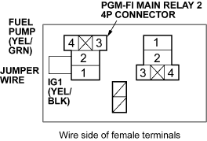

- Turn the ignition switch OFF.
- Remove the PGM-FI main relay 2.
- Connect the PGM-FI main relay 2 4P connector terminals No. 1 and No. 2 with a jumper wire.

- Turn the ignition switch ON (II).
- Measure voltage between the fuel pump 5P connector terminal No. 5 and body ground within the first 2 seconds after the ignition switch was turned ON (II).
FUEL PUMP 5P CONNECTOR

Wire side of female terminals
Is there battery voltage?
YES - Replace the PGM-FI main relay 2. 
NO - Repair open in the wire between the PGM-FI main relay 2 and the fuel pump 5P connector.

- Turn the ignition switch OFF.
- Check for continuity between the fuel pump 5P connector terminal No. 4 and body ground.
FUEL PUMP 5P CONNECTOR

Wire side of female terminals
Is there continuity?
YES - Replace the fuel pump.
NO - Repair open in the wire between the fuel pump 5P connector and G551.